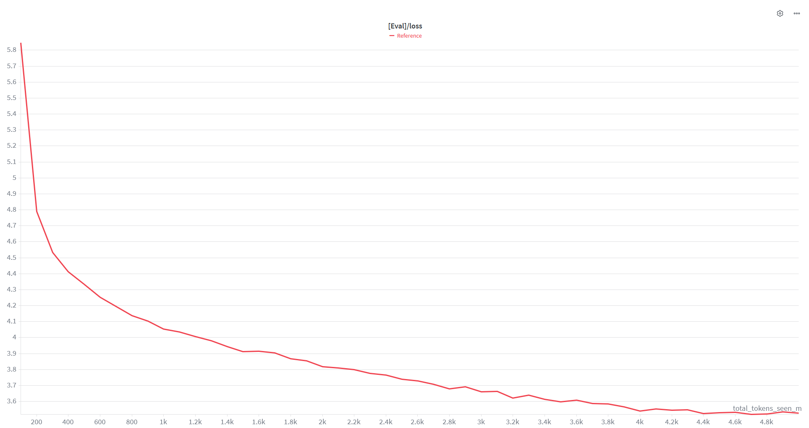
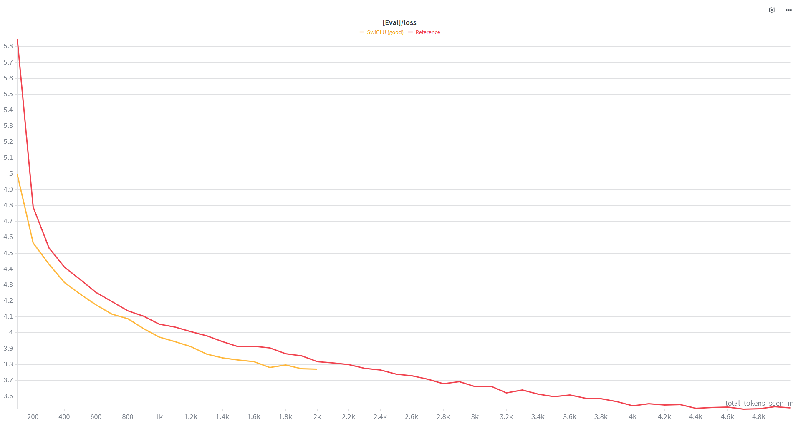
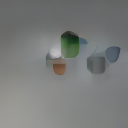
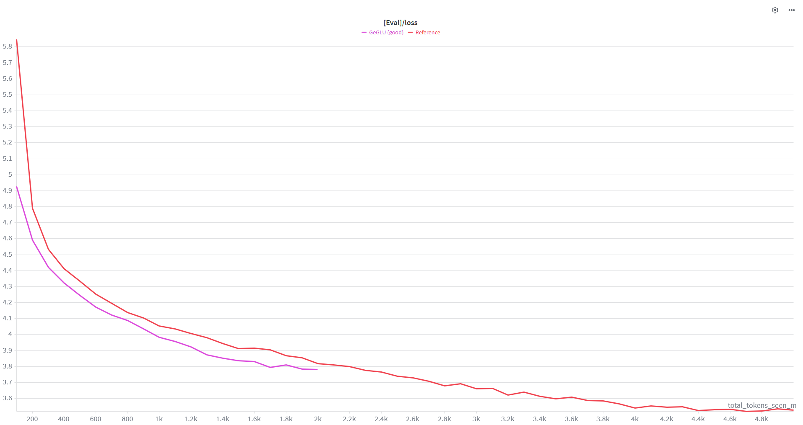
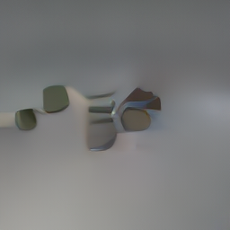
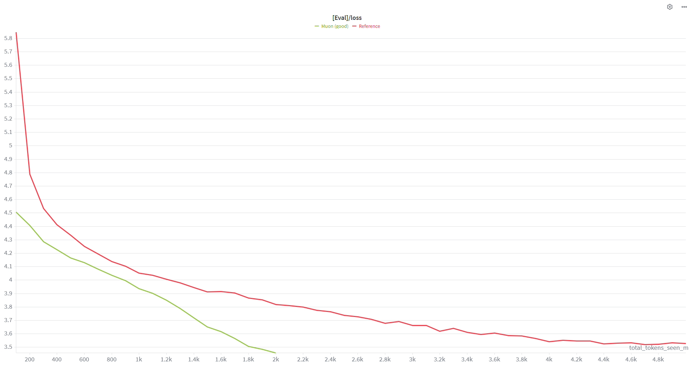
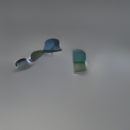
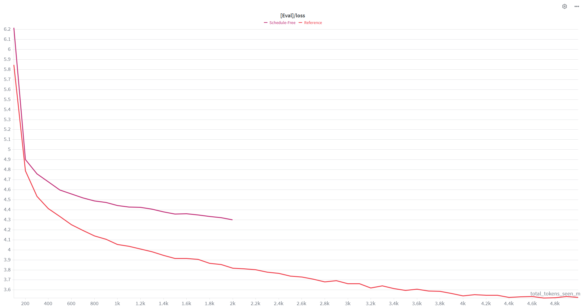
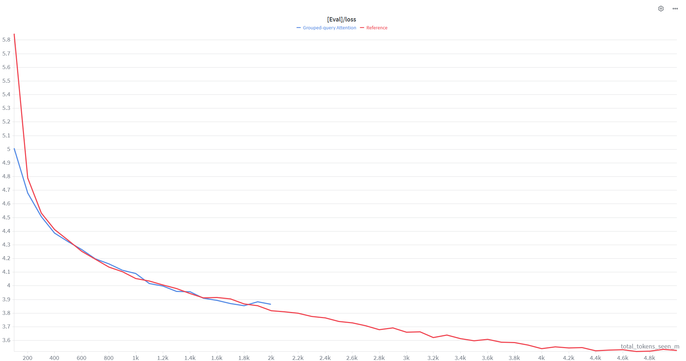

With AI models becoming larger and larger every year, and requiring more and more parameters for sophisticated and versatile data treatment and generation, the growing training runtime has become a legitimate concern. Even with an abundance of high quality data, high-performing computing nodes and a plenitude of memory, a model requiring an unreasonable amount of training time will be heavily penalized. This is why, in the present paper we focused on studying and analyzing and testing in practice a multitude of runtime optimization methods. We examined possible optimizer enhancers such as Sophia, Lion and Muon; improvements in vector representation such as RoPE and FlexAttention; alternative activation functions such as SwiGLU and GeGLU and so on. The main goal was to stack all the best performing and mutually compatible pieces together to get the best overall training time improvement. The model on which the described above was tested was the Nano4M, a multi-model capable of generating more than 10 image modalities such as RGB representation, depth heat map, surface normal heat map, CLIP, textual descriptions and many others. During our research, we have paid attention not only to the loss curves of the model in general, but to three core modalities (RGB, depth, text) as well.
Motivation
Training large multimodal models is expensive both in time and compute.
As models grow larger and datasets richer, the cost of a single training run
can reach thousands of GPU-hours. This makes iteration slow: testing a new
idea means waiting hours or days for results, which severely limits
experimentation speed.
Inspired by the nanoGPT speedrun challenge, we ask: how fast
can we reach a target validation loss on nano4M? Rather than chasing the
best final performance, we optimize for training efficiency
minimizing wall-clock time and the number of tokens required to hit our
target. This is a fundamentally different objective: it rewards architectures
and optimizers that converge faster, not just ones that converge better.
The practical impact is real. A 2× speedup means twice as many experiments
in the same budget. It means researchers with limited compute can iterate
at the same pace as well-funded labs. And the techniques that win
(better attention mechanisms, smarter optimizers, efficient data pipelines)
transfer directly to larger-scale training runs. Speed is not just a
convenience: it is a research multiplier.
Related Work
Various approaches have been proposed to accelerate neural network training. While individual techniques such as alternative optimizers, attention mechanisms and activation functions are well-documented in the literature, their combination under a single architecture remains underexplored. Our main contribution is precisely this stacking strategy, applied to the unique multi-modal nano4M model.
Muon(Jordan, 2024) — introduced the Muon optimizer with promising convergence speedups, which we successfully reproduced.
Sophia(Liu et al., 2023) — a scalable second-order optimizer for LLM pre-training, which we implemented in practice.
RoPE(Azhar, 2023) — a descriptive overview of Rotary Positional Embeddings.
Lion(Wang et al., 2023) — a lightweight optimizer explored as an alternative to AdamW.
FlexAttention(PyTorch, 2024) — a flexible and performant attention API that we integrated into our best model.
Schedule-Free AdamW(Defazio et al., 2024) — an approach removing the need for a learning rate schedule.
GQA(Raschka, 2024) — Grouped-Query Attention for reduced memory bandwidth.
SwiGLU(Selssabil, 2024) and GeGLU(Olamendy, 2023) — gated activation functions powering modern LLMs.
Methodology
Baseline
We trained nano4M for half the original schedule (~2h, 15,259 steps), stopping once we hit our target validation loss of 3.8 (group choice).

Baseline training loss — 15,259 steps
Depth ↓
Normals ↓
Text ↑
RGB ↓
0.041
5.101
0.436
0.055
Evaluation Protocol
Each extension is measured on four axes:
Wall-clock time : total training duration
Steps to loss 3.8 : potential training time = (s / 15,259) × t
SwiGLU replaces the standard GELU activation with a gated variant:
SwiGLU(x) = Swish(xW₁) ⊙ (xW₂). We added a second parallel
linear layer and replaced F.gelu with F.silu.
Training time: 1h57 ; Tokens/sec: 309k ; MFU: 42.1% ; Loss 3.8 at step: 12,210 ; Theoretical time: ~1h33

SwiGLU vs baseline training loss
Modèle
Depth ↓
Normals ↓
Text ↑
RGB ↓
Baseline
0.041
5.101
0.436
0.055
SwiGLU
0.040
5.035
0.383
0.053

SwiGLU RGB
SwiGLU converges slightly faster than the baseline with a similar loss curve.
GeGLU
ActivationMLP
GeGLU follows the same gated structure as SwiGLU but uses GELU instead of Swish:
GeGLU(x) = GELU(xW₁) ⊙ (xW₂). Implementation is identical to SwiGLU,
replacing F.silu with F.gelu.
Training time: 1h56 ; Tokens/sec: 309k ; MFU: 42.1% ; Loss 3.8 at step: 13,730 ; Theoretical time: ~1h45

GeGLU vs baseline training loss
Modèle
Depth ↓
Normals ↓
Text ↑
RGB ↓
Baseline
0.041
5.101
0.436
0.055
GeGLU
0.041
4.879
0.396
0.054

GeGLU RGB
GeGLU follows a loss curve close to SwiGLU, with a slight improvement on Normals.
Muon
OptimizerConvergence
Muon replaces AdamW for hidden weight matrices. It applies Nesterov momentum
then orthogonalizes the update via a Newton-Schulz iteration, producing
near-orthogonal updates that better condition the loss landscape. Embeddings,
norms and biases keep AdamW.
Training time: 1h56 ; Tokens/sec: 313k ; MFU: 38.3% ; Loss 3.8 at step: 9,160 ; Theoretical time: ~1h10

Muon vs baseline training loss
Modèle
Depth ↓
Normals ↓
Text ↑
RGB ↓
Baseline
0.041
5.101
0.436
0.055
Muon
0.032
3.984
0.437
0.053

Muon RGB
Muon converges significantly faster: reaching loss 3.8 roughly 6,000 steps earlier than the baseline.
Schedule-Free AdamW
OptimizerScheduler
Schedule-Free AdamW removes the learning rate schedule by maintaining a weighted
average of iterates internally, alternating between an exploration point and an
averaging point. A fixed learning rate of 0.0006 with 100 warmup steps is still required.
Training time: 2h24 ; Tokens/sec: 346k ; MFU: 42.3% ; Loss 3.8: not reached

Schedule-Free AdamW vs baseline training loss
Modèle
Depth ↓
Normals ↓
Text ↑
RGB ↓
Baseline
0.041
5.101
0.436
0.055
Sched.-Free AdamW
0.079
8.784
0.331
0.052
Schedule free AdamW RGB
Schedule-Free AdamW converges slower than the baseline and fails to reach the target loss within 15,259 steps.
Grouped-Query Attention (GQA)
AttentionMemory
GQA reduces the number of key and value heads while keeping query heads fixed.
Multiple query heads share a single KV head, lowering memory bandwidth and
increasing throughput. We expand KV heads back via repetition before the
attention computation.
Training time: 1h47 ; Tokens/sec: 346k ; MFU: 41.4% ; Loss 3.8 at step: ~15,259

Grouped-Query Attention vs baseline training loss
Modèle
Depth ↓
Normals ↓
Text ↑
RGB ↓
Baseline
0.041
5.101
0.436
0.055
GQA
0.142
11.179
0.150
0.050
GQA RGB
GQA reduces training time but significantly degrades downstream metrics, may be due to a misconfiguration. Loss 3.8 is only reached at the very end of training.
FlexAttention
AttentionGPU efficiency
FlexAttention is a PyTorch API that allows custom attention score modifications via a user-defined score_mod function, compiled into an optimized CUDA kernel. We applied it on maskless attention paths and fell back to standard attention when masks are present.
Training time: 2h29 ; Tokens/sec: 424k ; MFU: 51.8% ; Loss @ 15k steps: 4.32
Metric
Baseline
FlexAttention
Depth ↓
0.041
0.040
Normals ↓
5.101
5.047
Text ↑
0.436
0.442
RGB ↓
0.055
0.051
FlexAttention improves GPU throughput by +25% tokens/sec and +10% MFU vs baseline. However it does not accelerate loss convergence alone — loss 3.8 is only reached near the end of training.
Combining extensions - best model: Muon + FlexAttention
MuonFlexAttentionCombinations
Combined with Muon, FlexAttention becomes much more effective. Muon drives faster convergence while FlexAttention keeps GPU utilization high. Together they reach loss 3.8 around step 7,200 — a theoretical training time of ~55 minutes.
Model
Time
Loss@15k
Depth ↓
Normals ↓
Text ↑
Theor. time
Baseline
4h44
3.91
0.033
4.065
0.448
—
FlexAttention
2h29
4.32
0.040
5.047
0.442
~2h26
Muon + SwiGLU
2h00
3.96
0.036
4.209
0.420
~1h06
Muon + GeGLU
1h57
3.93
0.035
4.174
0.443
~58 min
Muon + Flex + GeGLU
1h54
3.93
0.035
4.141
0.421
~1h34
Muon + FlexAttention ✓
1h58
3.92
0.034
4.031
0.437
~55 min
Muon + FlexAttention achieves the best downstream metrics of all combinations. Depth 0.034 and Normals 4.031 outperform every other run. This is our best model.
Conclusion
In conclusion, our project had the main task of finding and testing possible enhancements and changes in the architecture that would allow for a shorter training time.
Our main result was a substantial decrease in training time from initially 2 hours to 57 minutes to reach the same training loss of 3.8. This remarkable two-fold decrease was achieved by combining Muon with FlexAttention.
One of the possible improvements could have been to tune more finely the hyperparameters of each extension. As the training was still taking a fairly long time and we had many extensions to test, it wasn't always practical to experiment a lot with its hyperparameters. As for future extensions, we think that it would be interesting to work on other models, perhaps LLMs, as they may behave differently that the nano4M that we have used in this project.